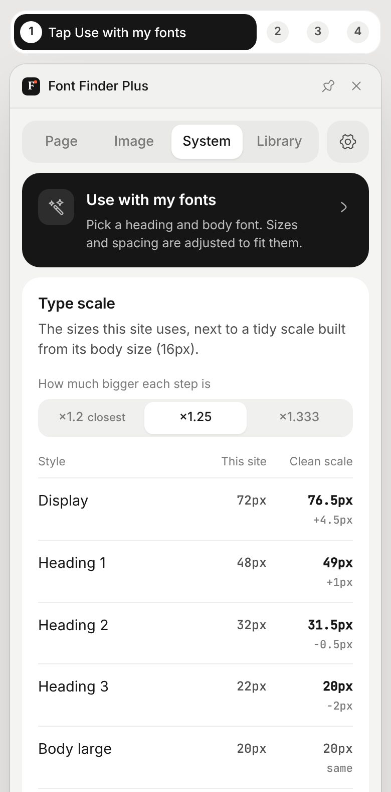
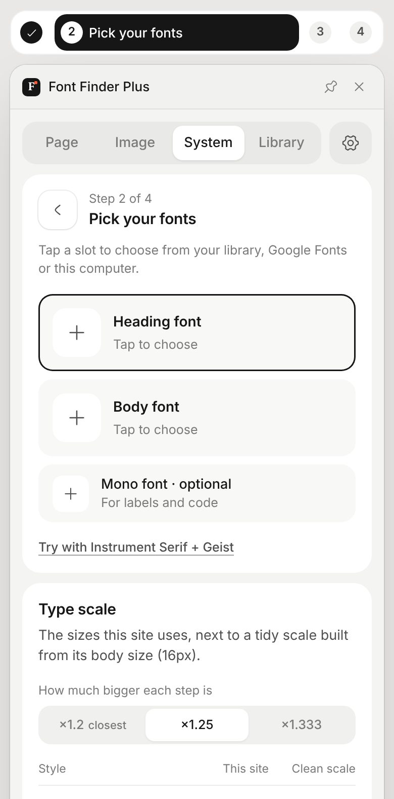
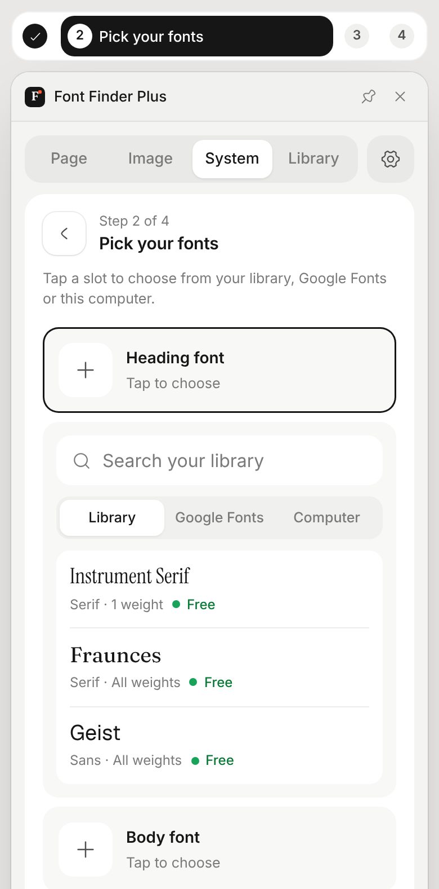
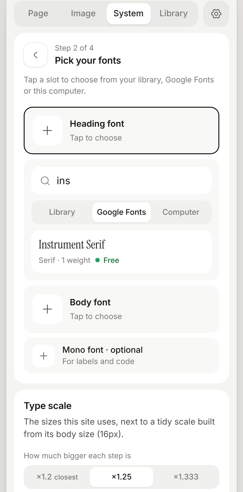
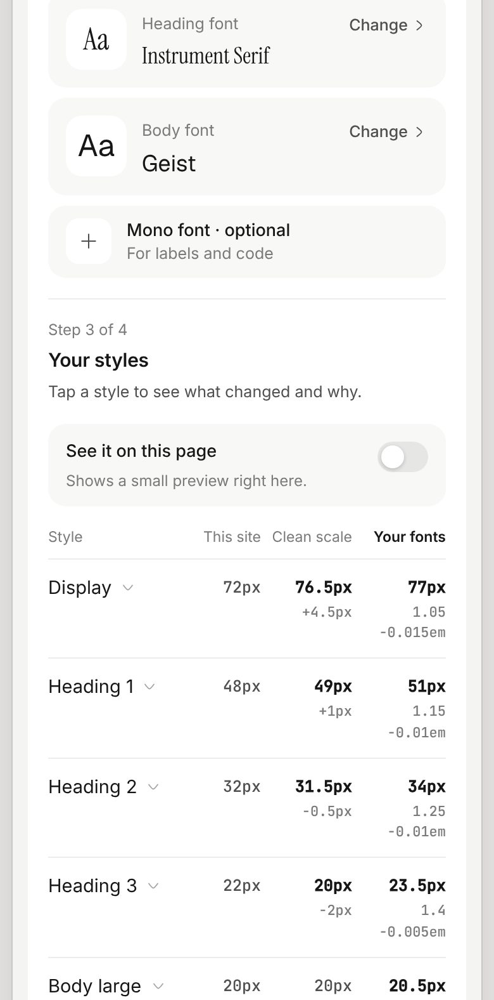
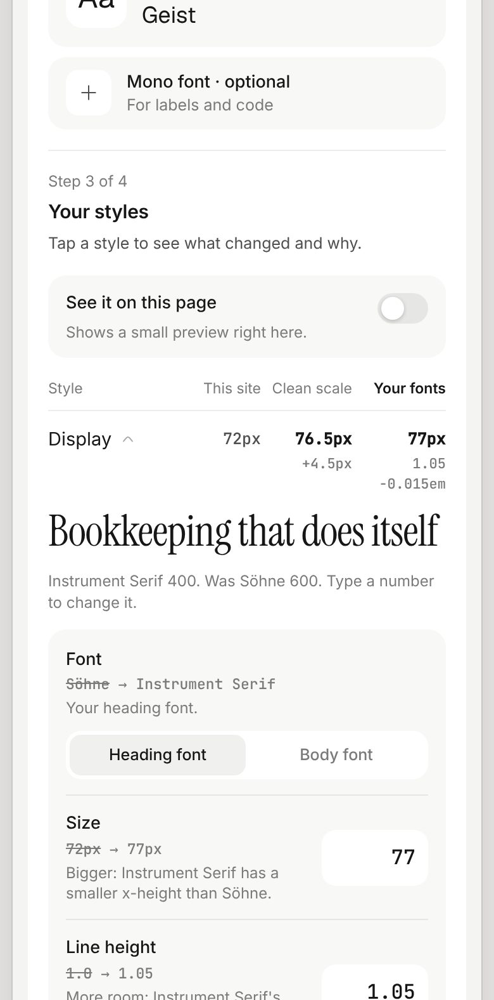
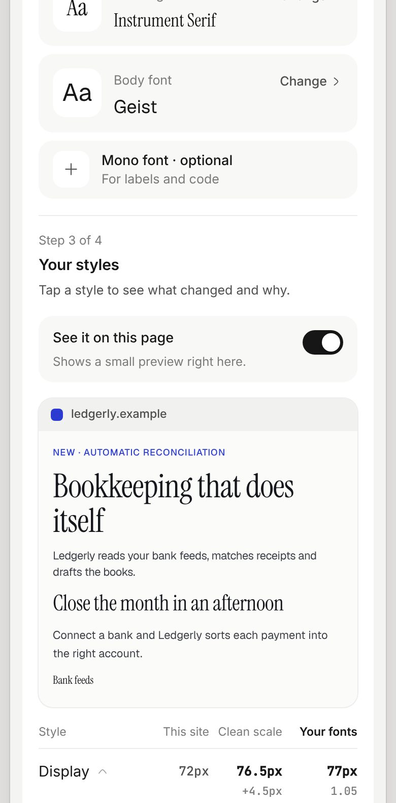
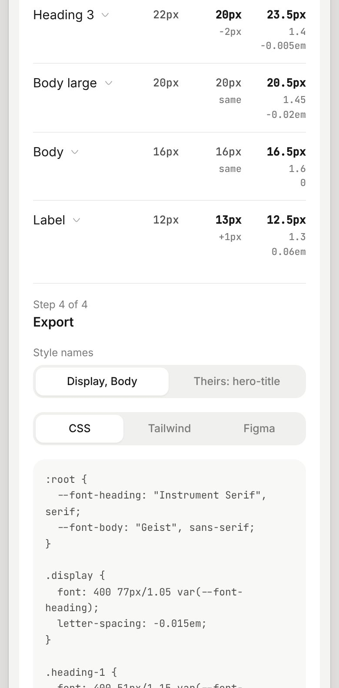
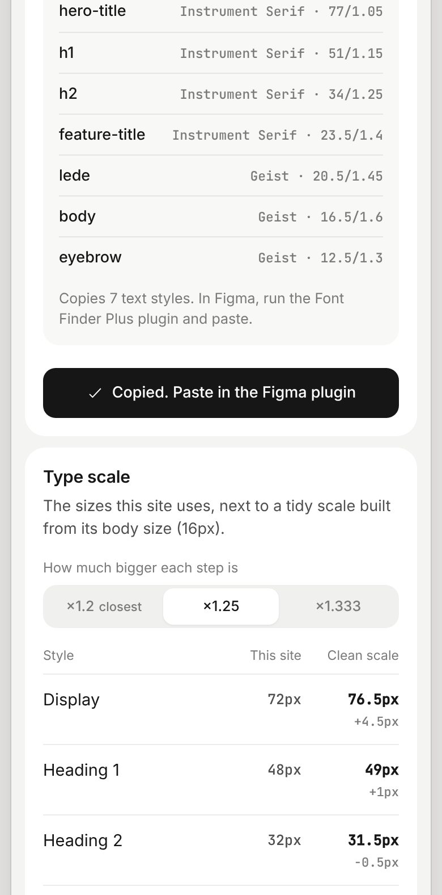

Pictures of each step on a phone, so you can see the whole flow without tapping. The side panel's System tab, after you choose your own heading and body fonts.

1StartTap Use with my fonts. Below it is the site's type scale next to a clean scale.

2Your fontsTwo empty slots, Heading font and Body font, plus an optional Mono font.

3Pick a fontTapping a slot opens a list right under it: your Library, Google Fonts or fonts on this computer.

4SearchType to find a font. After the heading font, the body font list opens by itself.

5Your stylesThe table gets a Your fonts column: new size, line height and spacing for each style.

6What changedTap a style to see old → new and why, for example "Bigger: Instrument Serif has a smaller x-height". Type over any number.

7See it on the pageA switch shows the website in your fonts and new sizes.

8ExportSimple names or the site's own names, then CSS, Tailwind or Figma.

9To FigmaCopy for the Figma plugin, which creates the text styles.